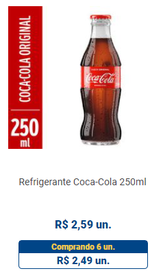

Fale a verdade, só de pensar em uma Coca-Cola geladinha não dá água na boca? Não é à toa,o refrigerante é absurdamente delicioso e combina com todos os alimentos, seja em dias quentes ou frios, no almoço, jantar e até mesmo no meio do dia.
A marca chegou ao Brasil em 1941 e desde então vem se inovando e criando produtos com a nossa cara. Uma prova disso é a deliciosa Fanta, tanto sabor laranja quanto uva, os refrigerantes Kuat e Sprite, e muitas outras bebidas. No Tenda Atacado você encontra a melhor oferta, confira!
Não é novidade dizer que a Coca-Cola possui diversas linhas de refrigerantes, mas você sabia que a empresa produz também isotônicos, sucos e até chá? Pois é, a marca é responsável pela produção dos sucos Ades e Del Valle, das bebidas gaseificadas Yas e Schweppes, da água mineral Crystal e dos chás Leão.
Muitas pessoas têm buscado um estilo de vida mais saudável, com menos consumo de açúcares, por exemplo. E, para quem ama a boa Coca-Cola em lata ou garrafa, deixar de apreciar a bebida poderia ser bastante difícil. Para que você não precise cortar a Coca de sua vida, pode optar pela versão sem açúcar.